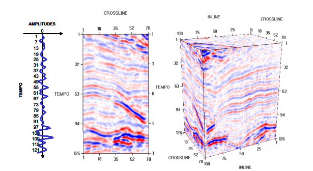

Wallas H. S. Santos
Imagens Sísmicas
Esta página tem como objetivo apresentar uma abordagem de realce de horizontes e falhas sísmicas em imagens de reflexão de ondas.
Introdução
Para análise da geologia de uma dada região, o método sísmico é uma abordagem utilizada para gerar modelos e processamento de dados relacionados. Nesse método, ondas elásticas são geradas na superfície e vão sendo propagadas até camadas mais inferiores. Essas ondas são refletidas de acordo com a composição o material e ao retornar a superfície são capturadas por equipamentos chamados geofones (terrestre) ou hidrofones (marítmos). A partir da aquisição, as ondas são transformado em sinal, no qual pode-se realizar processamento e encontrar características da geologia do local como horizontes e/ou falhas sísmicas.
As ondas captadas na aquisição são representadas em um linha contendo as amplitudes sísmicas ao longo do tempo chamada de traço sísmico. Na Figura abaixo é ilustrada os sinais de amplitudes sísmico em 1D (função), 2D (imagem) e 3D (volume).

Fonte SILVA, P. M. C, 2004.
A imagem abaixo será o exemplo utilizado para estudo. As intensidades de pixels estão quantizados para uma imagem 8 bits para ser representada propriamente no monitor. Os dados originais estão em 16 bits que permite uma escala mais apropriada para representar as amplitudes do traço sísmico. Nessa imagem os horizontes são linhas horizontais com intensidades e pixels semelhantes. A falha sísmica é a descontinuidade do horizonte.

Imagem sísmica exemplo.
Quality Threshold
O algoritmo de clusterização Quality Threshold (QT) foi aplicado ao agrupamento de dados alternativos, proposto inicialmente para o agrupamento de genes do cromossomo humano (XU, 2005; JIANG, 2006). O algoritmo segue os passos:
- 1. Inicialmente, é necessário escolher um limiar de qualidade para formação do cluster. Esse limiar é um valor informado pelo usuário que irá determinar à abrangência de cada cluster. Com isso o número total de clusters é inversamente proporcional ao valor do diâmetro, ou seja, quanto menor o diâmetro mais clusters resultantes teremos no processamento;
- 2. Para cada ponto, será calculada a distância euclidiana entre este e os demais pontos, dessa forma o algoritmo irá executar o processo de geração dos clusters candidatos. A formação dos candidatos é delimitada pelo limiar estabelecido anteriormente, assim se a distância for menor ou igual ao limiar aqueles dois pontos em questão compõem o mesmo candidato, caso contrário, o valor da distância seja maior que o limiar esse ponto não constituirá esse cluster. Deste modo o ponto fará parte de outro cluster cuja a distância atenda ao critério de formação, menor ou igual ao limiar. Este procedimento é realizado para os pontos restantes gerando todos os candidatos a clusters.
- 3. Nessa etapa será calculado entre os clusters candidatos que possuírem o maior número de pontos a ele associado, dessa forma esse cluster candidato passará a ser um verdadeiro cluster. Os pontos que compõem o melhor candidato são removidos da amostra original.
- 4. Repetir o novamente os passos 2 e 3 até que os demais pontos sejam alocados nos seus respectivos clusters.
O QT tem como características a "qualidade" (quality), ou seja, indivíduos somente farão parte de um grupo se estiverem dentro de um limiar (threshold). Esse limiar é o parâmetro do algoritmo, e vai influenciar na quantidade de grupos resultantes. Quanto maior um limiar, maior será a abrangência dos grupos, resultando em menor número de grupos. Do contrário, o algoritmo vai gerando grupos podendo fazer o resultado ficar super segmentado.
Metodologia
Inicialmente, assim como várias metodologia de processamento de imagens/sinais é desejado remoção de ruídos e artefatos contidos nos dados. Para o tal, será aplicado um filtro de suavização na coluna da imagem que é referente a um traço sísmico. O filtro realiza uma média em cada pixel tomando os dois vizinhos acima e abaixo.
A Figura abaixo mostra um traço sísmico original a esquerdo e o mesmo suavizado a direita. O filtro da média reduziu a amplitude dos picos e vales muito elevados.
Seguindo o método, o QT, apresentado na sessão anterior, foi utilizado na metodologia para agrupar intensidades de pixels na imagem. Essas intensidades mensuram a amplitude do sinal pelo traço sísmico. O QT tem como parâmetro principal a distância entre os grupos, e resulta em n grupos que satisfaçam esse limiar. Na metodologia foi adotado por não se saber quantos grupos seria ideal para segmentar os horizontes. No problema em questão, buscou-se experimentalmente encontrar um limiar que não agrupasse muitos tipos horizontes em um mesmo cluster, e também que não fizesse que um horizonte não fosse contido em vários grupos.
Resultados
As imagens abaixo mostram 6 clusteres isolados em imagens individuais. Os pixels com intensidade branca indicam a presença no cluster. Essa saída é resultado do QT quando deseja-se que a distância entre pixels seja 700. De maneira experimental apresentou os resultados mais interessantes para a metodologia na imagem exemplo utilizada. ruídos, logo é necessário realizar pós processamento para removê-los ou adicionar a algum grupo próximo. A quantidade total de clusteres foi de 22, os demais foram omitidos por serem em clusteres com pouco individuos, geralmente referente a ruídos.


Imagens binárias com alguns clusteres resultantes da aplicação do QT.
A imagem abaixo a seguir é uma representação do resultado da clusterização em cores. Os pixels que possuem o mesmo pixel fazem parte do mesmo grupo.

Resultado da clusterização em cores. Cada cor é um grupo diferente.
A principal contribuição dessa abordagem é apresentar uma forma de identificar os horizontes principalmente após uma falha sísmica. Embora algoritmos de binarização facilmente segmentam os horizontes de forma relativamente eficiente, têm seus resultados comprometidos na presença da falha sísmica que provoca descontinuidade no horizonte. Dessa forma, não é tão trivial identificar precisamente de maneira automática a extensão do horizonte por todas as dimensões da imagem.
Nas imagens abaixo mostram o detalhe ampliado do resultado da metodologia em uma falha sísmica. Podemos notar que os grupos referentes a um horizonte mantiveram-se bem identificados mesmo apoós a ruptura feita pela falha. Além de evidenciar mais a presença da falha naquela direção, pois a descontinuidade de pixels com o mesmo comportamento ao longo do horizonte (valores de intensidades) pode caracterizar uma falha, refletindo no resultado do agrupamento deste pixels.


Detalhe do resultado do QT ampliado em uma falha sísmica.
Conclusão
Esta página apresentou conceitos básicos de imagens sísmicas e a aplicação do algoritmo de clusterização QT. Os resultados obtidos pela metodologia são apenas preliminares, tendo como objetivo ser o início de uma abordagem com base a clusterização não supervisionada. Cabe a trabalhos futuros melhorar os resultados e realizar propriamente a segmentação de horizontes e falhas automaticamente.
Código Fonte
src.zipReferências
SILVA, P. M. C. Visualização Volumétrica de Horizontes em Dados Sísmicos 3D. Tese de Doutorado em Informática. Puc-Rio 2004.
JIANG, D.; TANG, C.; ZHANG, A. Cluster analysis for gene expression data: A survey. IEEE Transactions on Knowledge and Data Engineering, 16 (11) 1370-1386, New York, 2006.
XU R.; WUNSCH, D. Survey of clustering algorithms. IEEE Transactions on Neural Networks, vol. 16, n. 3, p. 645 - 678, 2005.